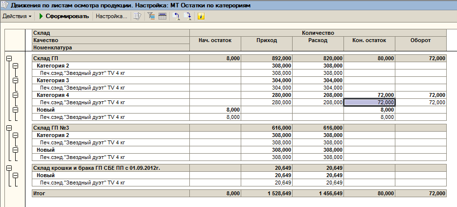

При проведении заказов покупателя в рабочей базе ошибка типа - "Остатка по листам осмотра по организации ОАО "Сладонеж" по складу Склад ГП товара "Конф. "Яркая марка" клубника со сливками 2.5 кг" ("Качество: Категория 2") недостаточно.
Не хватает 7,5 кг; Остаток 0 кг; Требуется 7,5 кг"
Смотрить через универс. отчет
Исправить категорию, провести
